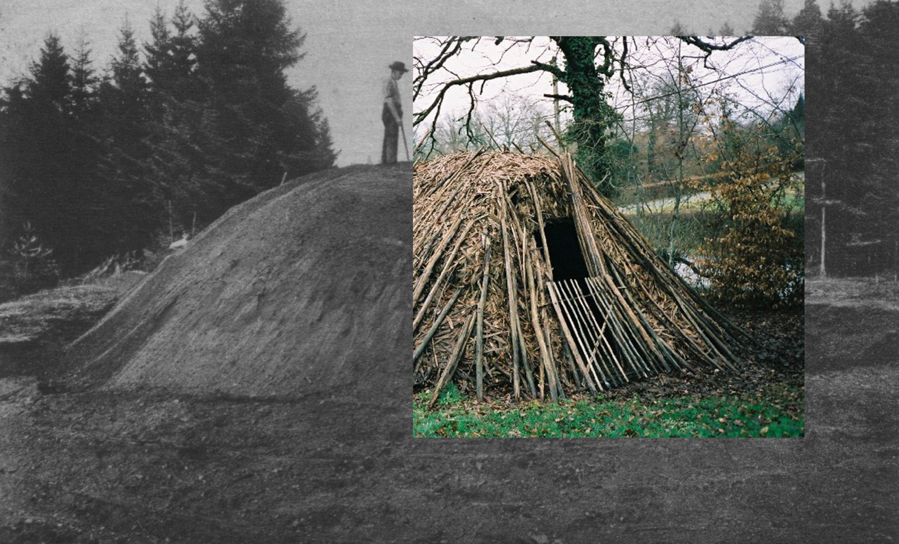
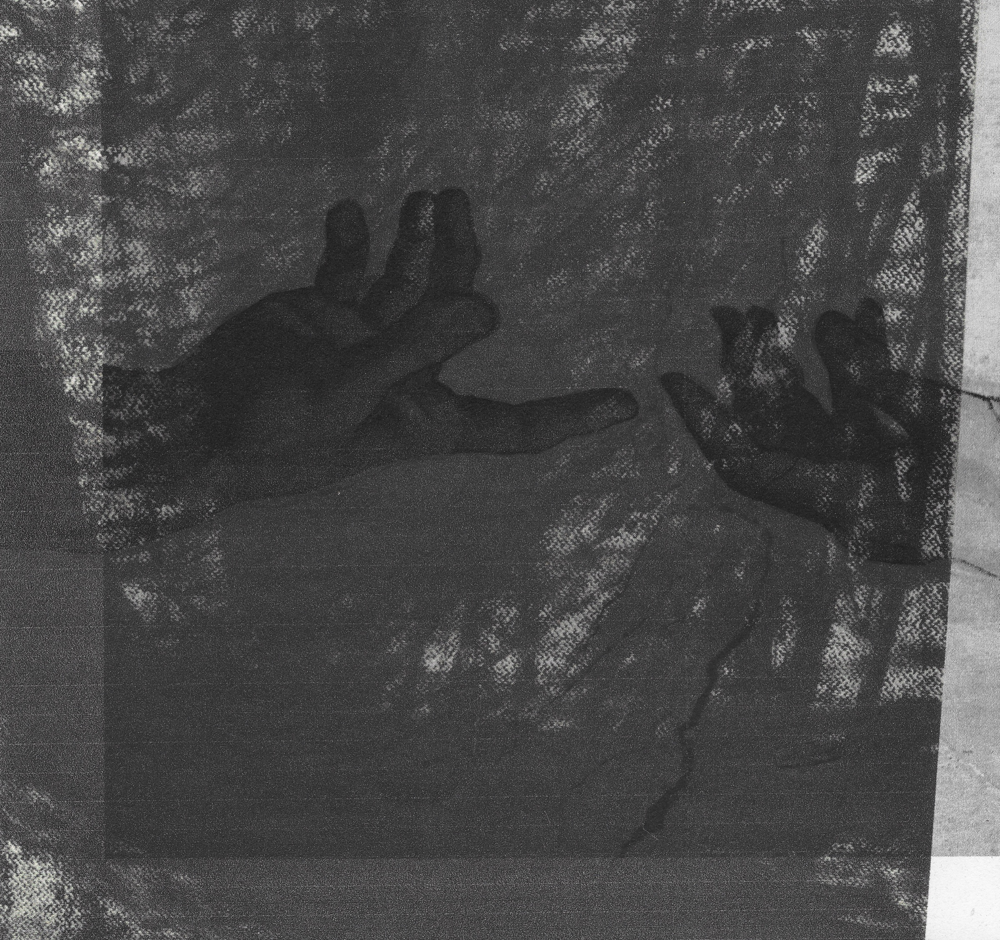
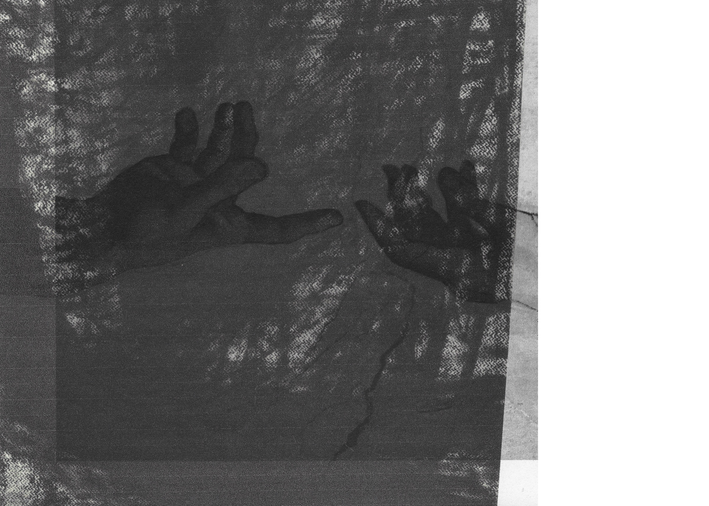

01
L'abri
Ce que signifie se protéger, se retirer, habiter un espace resserré. L'abri comme geste primitif — avant l'architecture, avant la forme, il y a la nécessité d'un dedans.
Bachelard · Sloterdijk · Ingold
Travail plastique & artistique
Espace, matière, mémoire — là où quelque chose advient. Dessin au fusain, empreinte, photographie, sculpture : une pratique qui inscrit l'expérience sensible dans la matière.

Je travaille les seuils — espaces d'entre-deux où quelque chose advient. Du fusain sur toile de lin au béton fibré, chaque geste inscrit une mémoire dans la matière et transforme l'expérience intime en œuvre partagée.
L'Empreinte & l'Archive
« Étymologiquement, suggère l'idée de seuil, de franchissement. »
Capturer les lieux — charmer la souche pour en prendre l'empreinte, archiver la rencontre. L'impression photographique comme geste d'archive : ce qui a eu lieu reste, fixé dans la matière.
L'Abri & le Geste Primaire
« Le sol — Boden — comme fondement de toute présence au monde. »
La nécessité de faire abri — avant l'architecture, avant la forme. Le toucher comme premier contact avec le monde physique : poser la main, presser, laisser une trace. La terre comme premier sol, premier corps, premier refuge.
L'Anamnèse
« L'intimité d'un être, son for intérieur, l'abysse même de sa pensée. »
Les grands dessins au fusain comme recherche intérieure d'un souvenir — faire remonter des formes oubliées. Le geste noir sur la toile de lin n'invente pas : il retrouve. Une anamnèse visuelle, lente, qui inscrit ce que la mémoire n'a jamais tout à fait perdu.
La Mémoire
« D'ici jusqu'à cette heure — le temps comme matière à traverser. »
La persistance de l'image — ces « images de mémoire » qui trouvent un support dans l'air, la poussière, la cire. Les transferts sur paraffine fixent le souvenir dans une matière translucide, entre présence et disparition. Ce qui reste n'est pas une copie : c'est une survivance.
L'endroit d'où l'on voit
« Le theatron grec : le lieu du voir, où le corps entier devient regard. »
L'expérience du temps et du regard — où se situe le corps qui observe ? La sculpture comme lieu de la perception.

Mémoire de master · DNSEP 2022
Dir. Xavier Vert · Jury Fanny Drugeon
Une recherche-création explorant la relation entre espace, matière et mémoire. Seuils, empreintes, gestes de conservation — comment l'artiste donne forme à une expérience sensible du lieu. Narthex, aître, theatron : les espaces d'entre-deux où quelque chose advient.
Bachelard · Didi-Huberman · Eliade · Ingold
À propos
Artiste-Scénographe, je développe un profil à l'interface entre création, image et mise en œuvre. Scénographe dans ma manière de travailler, je mets en scène les choses — que ce soit au format d'un moodboard, d'un shooting ou d'une scène de théâtre.
Diplômée du DNSEP des Beaux-Arts de Nantes (mention qualité des réalisations), formée au DNA design d'objet et espace à l'EESAB Rennes. Mon travail explore les seuils : ces espaces d'entre-deux où la matière devient mémoire, où l'expérience intime devient œuvre partagée.
Publié dans la Revue Zérodeux · Voyage à Nantes 2022.
Scénographie · Décoration · Direction artistique
Scénographie de théâtre, décoration d'intérieur, conception d'exposition : mettre un univers sensible au service d'un projet, d'une maison, d'un artiste.
Chaque projet est une occasion de mettre une sensibilité singulière au service d'une vision extérieure — avec rigueur technique, écoute et capacité à habiter l'univers de l'autre.
Recherches intellectuelles
Des fils conducteurs qui traversent la pratique — notions, espaces mentaux, questions ouvertes.

Ce que signifie se protéger, se retirer, habiter un espace resserré. L'abri comme geste primitif — avant l'architecture, avant la forme, il y a la nécessité d'un dedans.